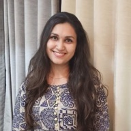
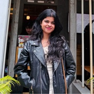
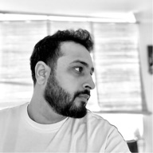

Senior Experience Designer · Bengaluru
Users shouldn't have to chase what they came for.
I'm Jerry. I design products where the thing you need is already waiting for you.
Senior Experience Designer · Bengaluru
I'm Jerry. I design products where the thing you need is already waiting for you.
Case studies, side experiments, and the odd weekend rabbit hole.
Fintech · Interaction Design · 2024–25
Making it okay for traders to take a break from the markets.
View interactionConsumer App · Case Study · 2024
A consumer app experience designed for the UAE market.
Read case studyFintech · Case Study · 2023
A UAE lending experience, reworked for clarity and trust.
Read case studyFintech · UI Exploration · 2023
A vehicle super-app UI exploration, from first principles.
View explorationFintech · Case Study · 2022
Bringing order to a retail app that tried to do everything, for India's Kirana shop owners.
Read case studyRecommendations from managers and teammates at FYERS and Thence, as written on LinkedIn.
I still remember Jerry from the time I hired him into the design team at FYERS. He came with a fantastic portfolio and a credible body of work: soft-spoken, warm, and incredibly talented. Oh boy, didn't he ask a lot of questions?
And I mean that as one of the highest compliments I can give a designer.
Jerry doesn't jump into solutions. He wants to understand the problem, the intent behind it, and the things that haven't been said yet. Over the years, I learned that I could give him an idea that wasn't fully formed, and he would ask the right questions, fill in the gaps I had missed, and bring clarity to it.
When I later moved from Design to set up the Innovation Lab, I had the difficult choice of picking a few people from a team that was very close to me. Jerry was one of the people I chose. I chose him because I knew I could trust him with something from ideation all the way to execution.
That trust was never misplaced. Jerry commits and delivers. He doesn't need repeated follow-ups or someone constantly looking over his shoulder. And the work arrives with thought, clarity, and exceptional visual craft.
FYERS Academy is a good example. Jerry played an immense role in visualizing and building the experience. I also watched him evolve from designing experiences in Figma to embracing AI and using it to turn ideas directly into working applications. When someone with his level of visual design ability and creativity learns to wield technology like that, the possibilities become genuinely exciting.
But I would be leaving out an important part of Jerry if I spoke only about his work. He genuinely cares about the people around him. Our daily conversations in the Innovation Lab were often filled with ideas, questions, debates, and laughter, and his care for his teammates was always evident. It was never performative. That's simply who he is.
Jerry is one of those people you would want on your team: a fantastic designer, a curious mind, a dependable colleague, and, more importantly, a wonderful human being.
I wish him nothing but the very best for what comes next. And selfishly, I hope our paths cross again and we get to build something together someday.
Jerry is someone who understands that good design is as much about judgement as it is about craft.
What I’ve enjoyed seeing is how quickly he’s moved from Figma to Claude Design and Claude Code, without losing the creative thinking along the way.
He’s not precious about tools or process. He’s willing to rethink how things get done, experiment and move forward. But importantly, he knows what to keep, what to question and when something is good enough to put into the world.
That balance of curiosity, creativity and sound judgement is what makes Jerry someone I’d happily work with again.
Jerry and I worked side by side on the product team, and it was a genuine pleasure to have him as a teammate.
Jerry has excellent visual design skills, and his work always stood out for its polish. What impressed me just as much was the interest he showed in understanding our design system. He took the time to learn it properly and used components thoughtfully, which kept his work consistent with the rest of the product.
He is also very good at prototyping. The working prototypes he built in Figma made ideas easy to understand and test, well before anything went into development.
Jerry is one of the best teammates anyone could ask for, strong in both product design and visual design. I recommend him wholeheartedly to any design team.
I had the pleasure of working with Jerry for four years at Thence, and he is easily one of the most creative designers I’ve worked with. He’s deeply dedicated to his craft, full of bold ideas, and, more importantly, has the skill to bring even his wildest ones to life.
Jerry is equally strong in UX as he is in UI. He thinks through the problem as carefully as he designs the final screens. He never shies from collaborating with people, and he stays calm under pressure. No matter how tight the deadline or how complex the brief, he never makes a goal feel out of reach.
What really sets him apart is how he works with clients. He explains his thinking with clarity and conviction, and I’ve seen clients specifically ask for Jerry on their projects because of the trust they have in him and his work. It's nice to see his craft being recognised.
He’s also endlessly curious and always finds ways to learn and grow beyond his day job. It’s been great to see him grow into the brilliant designer and artist he's become over the years I've known him. He doesn't stop amazing me with his craft.
Any team would be lucky to have Jerry.

I first met Jerry on his interview day at Fyers, and I still remember how impressed I was with his portfolio and the way he approached his work. It didn't take much thought to move him to the next round with the managers. I could see that he was talented, curious, and had the kind of creative mind that would fit right in with the team.
Although we didn't get the chance to work together immediately after he joined, I eventually had the opportunity to work with him, and he was every bit as curious and creative as I'd expected. Jerry always wanted to learn more, explore new ideas, and find ways to make things better. He often thought outside the box and brought fresh perspectives to the table, so his being part of the Innovation Lab never came as a surprise to me!
Working with Jerry over the past year and a half has been a genuinely great experience. He is patient, approachable, and always willing to listen, think things through, and help you find a solution. He never makes a problem feel bigger than it is, and he has a way of looking at challenges from a different angle and adding his own creative twist. He is also someone who is always there for his colleagues, ready to share ideas or lend a helping hand.
One thing I’ve always enjoyed about Jerry is how curious he is about the world around him. Our conversations would often leave me thinking, “Wait, how do you even know all this?” 😂 He keeps himself updated on so many different things, and there was almost always something new I could learn from him. His combination of creativity, intellectual curiosity, and willingness to explore ideas is what makes him stand out.
I feel fortunate to have worked with Jerry and to have learned from such a creative and inquisitive mind. I’d happily work with him again, and I’m excited to see all the new ideas and possibilities he brings to whatever he takes on next!

Jerry is exactly the type of person you imagine when you think of a design thinker. His brain functions at a very holistic level - he thinks in five directions before coming up with a design concept, which is almost always extremely unique.
I worked with him on multiple projects where we collectively explored different domains, different ideas, UI design concepts, language, etc., and he would always come extra prepared. He’s brilliant at design, research, conceptualization, and, most importantly, user experience.
One of the most memorable projects has to be the Augmented Reality product, where end users of the product could capture physical objects, which would later help customers on an e-commerce platform visualize those objects in their environment. The client and I were equally impressed and pleasantly surprised by the thought that went into the design - extremely intuitive yet simple.
I saw him get promoted three times during my tenure, all thanks to his exceptional work on client-facing projects. He quickly adapts his narrative to position his concepts for the relevant stakeholder and is able to think from both the user and business points of view.
I would hire Jerry in a heartbeat - he’s exactly the kind of leader who can lead, direct, design, and accelerate any work he takes on.
I had the pleasure of working closely with Jerry Jose during our time together at Thence, particularly during the UIX Hackathon, our internal company competition. Jerry’s contributions were instrumental to our success, and his outstanding qualities as a designer and colleague shone through.
Jerry is a highly creative individual who consistently brings fresh, innovative ideas to the table. His open-minded attitude makes him a fantastic collaborator—he’s always eager to explore new perspectives and incorporate feedback into his designs. This willingness to embrace different viewpoints not only enriches his work but also fosters a positive and inclusive team environment.
What truly sets Jerry apart is his deep empathy in design. He has an exceptional ability to understand user needs and translate them into intuitive, impactful experiences. His designs are not just aesthetically pleasing but also user-centric, ensuring that the end product is both functional and enjoyable to use.
Working with Jerry has been a rewarding experience, and I’ve seen firsthand how his creativity, open-mindedness, and empathy contribute to exceptional design outcomes. I highly recommend Jerry to any team looking for a talented and dedicated UI/UX designer.
